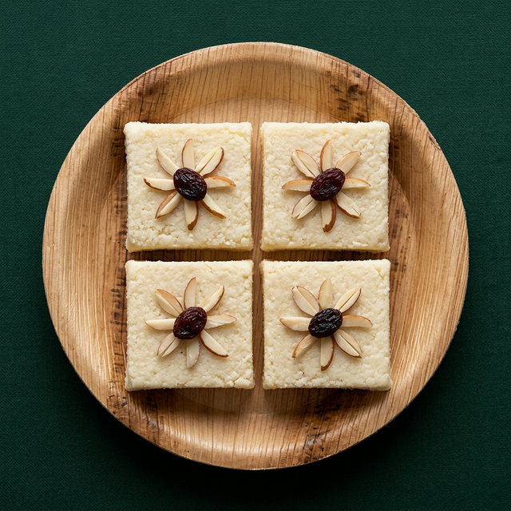
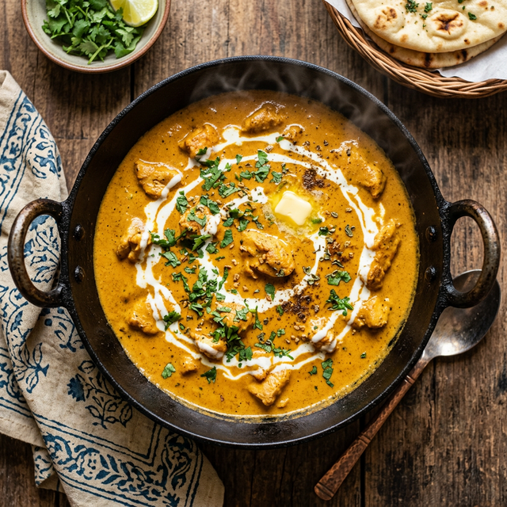
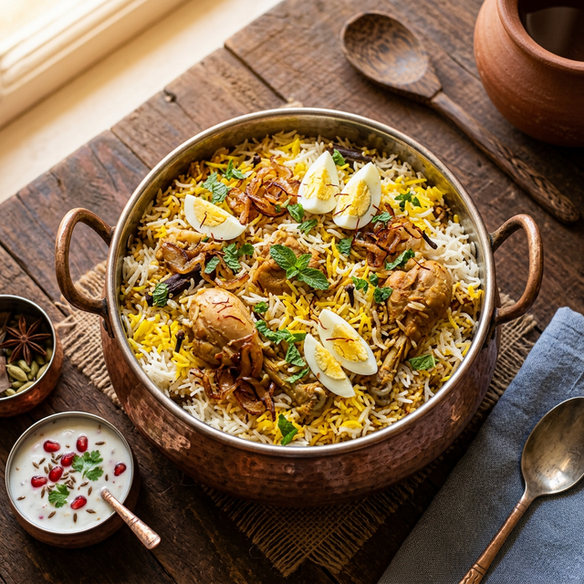
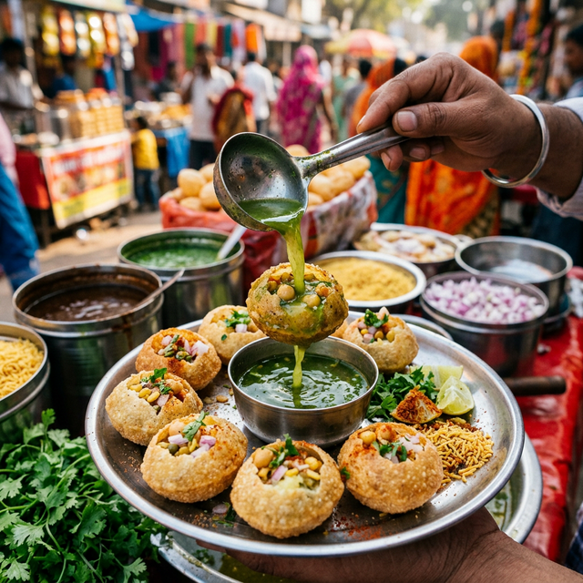
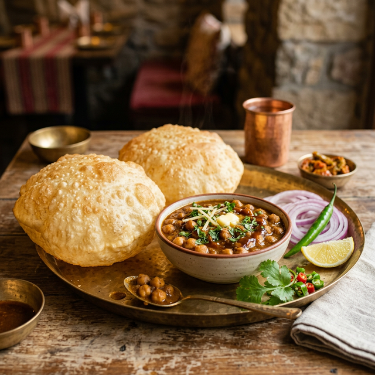
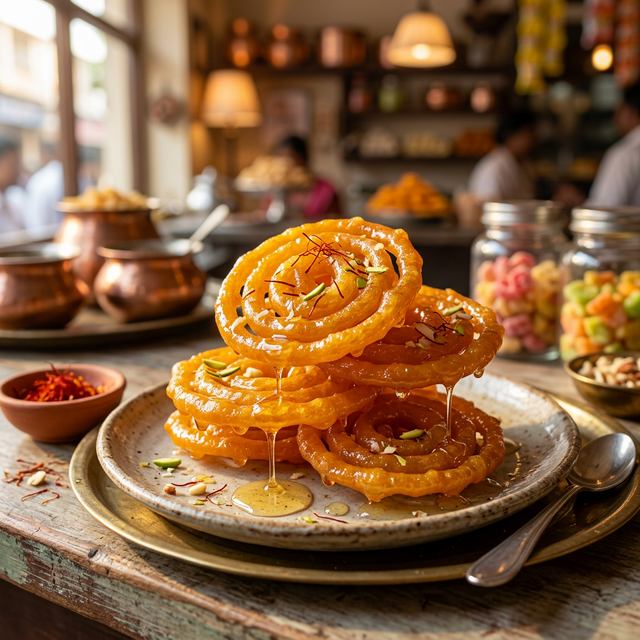
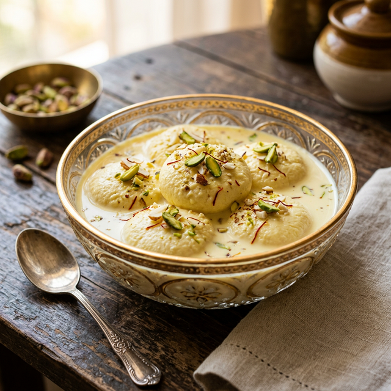

🍳 Our Famous Dishes 🍳
🍩 Gulab Jamun
"The king of Indian desserts — soft, syrupy, and pure bliss!" 👑
🧾 Ingredients
- 1 cup khoya (mawa), grated
- 2 tbsp all-purpose flour (maida)
- 1 tbsp semolina (optional)
- ¼ tsp baking soda
- 2–3 tbsp milk (as needed)
- Ghee or oil for deep frying
For Jamun Balls:
- 1½ cups sugar
- 1½ cups water
- 3–4 green cardamom pods, crushed
- 1 tsp rose water
- Few saffron strands (optional)
For Sugar Syrup:
👨🍳 Process
- Heat sugar and water in a pan. Stir until sugar dissolves.
- Add cardamom and saffron. Simmer 4–5 min until slightly sticky.
- Turn off heat, add rose water. Keep syrup warm.
Step 1: Prepare Sugar Syrup 🍯
- Mix grated khoya, maida, semolina, and baking soda.
- Add milk gradually. Knead into soft, smooth dough.
- Rest for 5–10 minutes.
Step 2: Prepare Dough 🫐
- Make small crack-free balls.
- Heat ghee on low-medium flame.
- Fry slowly until golden. ⚠️ High heat = raw inside!
Step 3: Shape & Fry 🔥
- Transfer hot jamuns to warm syrup immediately.
- Soak for at least 2 hours.
- Serve warm or at room temperature. Enjoy! 🎉
Step 4: Soak 💧

🧛 Vampire Blood Drink
"Spooky, tangy, and terrifyingly delicious!" 🩸
🧾 Ingredients
- 1 cup pomegranate juice
- ½ cup cranberry juice
- 1 tbsp grenadine syrup
- 1 tbsp lemon juice
- 1 tbsp honey
- Few drops red food color (optional)
- Ice cubes
- Chocolate syrup (for glass rim)
- Fresh mint leaves for garnish
For the Drink:
👨🍳 Process
- Take a serving glass.
- Drizzle chocolate syrup around the rim so it drips like blood.
Step 1: Prepare The Glass 🥂
- Combine pomegranate juice, cranberry juice, lemon juice, and honey.
- Stir well until smoothly mixed.
Step 2: Mix The Drink 🧪
- Put ice cubes in the prepared glass.
- Pour the drink mixture over the ice.
Step 3: Add Ice 🧊
- Add red food color for a deeper blood-like appearance.
- Garnish with fresh mint leaves. Serve chilled! 🧛♂️
Step 4: Garnish & Serve 🌿
⚡ Result: A deep red spooky drink perfect for haunted nights!

🍬 Classic Barfi
"Melt-in-your-mouth sweetness, perfect for every celebration!" 🎊
🧾 Ingredients
- 2 cups khoya (mawa), grated
- 1 cup powdered sugar
- 2 tbsp ghee
- ½ tsp cardamom powder
- Chopped almonds & pistachios for garnish
- Silver vark (optional, for decoration)
For Barfi:
👨🍳 Process
- Heat ghee in a heavy-bottom pan.
- Add grated khoya and stir continuously on low heat.
- Cook 8–10 min until it leaves the sides of the pan.
Step 1: Cook the Mixture 🍳
- Add powdered sugar and cardamom powder.
- Mix well and cook 3–4 more minutes until thick and smooth.
Step 2: Add Sugar & Flavoring 🍬
- Grease a plate with ghee. Pour mixture and spread evenly.
- Garnish with nuts and silver vark.
- Cool 1–2 hours, then cut into diamond shapes. Enjoy! 💎
Step 3: Set & Cut ✂️
⚡ Rich, melt-in-mouth barfi — celebration-ready!

🍗 Butter Chicken
"Creamy, dreamy, and absolutely legendary!" 🧈
🧾 Ingredients
- 500g chicken (boneless, cubed)
- ½ cup yogurt
- 1 tbsp lemon juice
- 1 tsp red chili powder
- 1 tsp turmeric, 1 tsp garam masala
- Salt to taste
For Marinade:
- 2 tbsp butter + 1 tbsp oil
- 1 cup tomato puree (4–5 tomatoes)
- ½ cup cream
- 1 tsp kasuri methi (dried fenugreek)
- 1 tsp sugar, salt to taste
- 1 inch ginger, 4 garlic cloves
- 2 green cardamom, 1 bay leaf
For Gravy:
👨🍳 Process
- Mix chicken with yogurt, lemon, spices. Marinate 1–2 hours.
Step 1: Marinate Chicken 🍗
- Grill or pan-fry marinated chicken until charred and cooked.
- Set aside.
Step 2: Cook Chicken 🔥
- Heat butter. Sauté cardamom, bay leaf, ginger-garlic paste.
- Add tomato puree. Cook 10 min until oil separates.
- Blend, strain for smooth gravy. Add sugar, salt, kasuri methi.
Step 3: Make Gravy 🍅
- Add cooked chicken to gravy. Simmer 5 min.
- Finish with cream and a knob of butter. Serve with naan! 🫓
Step 4: Combine & Finish 🧈
⚡ Rich, creamy butter chicken — restaurant-style at home!

🍚 Hyderabadi Biryani
"Every grain of rice tells a royal story!" 👑
🧾 Ingredients
- 2 cups basmati rice (soaked 30 min)
- 4 cups water
- 2 bay leaves, 4 cloves, 4 cardamom
- 1 tsp salt
For Rice:
- 500g chicken (on bone)
- 1 cup yogurt, 2 onions (fried golden)
- 1 tbsp biryani masala, 1 tsp red chili
- ½ tsp turmeric, salt to taste
- Ginger-garlic paste (2 tbsp)
- Few saffron strands in 2 tbsp warm milk
- Fresh mint & coriander, 2 tbsp ghee
For Chicken Layer:
👨🍳 Process
- Mix chicken with yogurt, fried onions, spices. Marinate 1 hour.
- Cook chicken in pot until half done.
Step 1: Marinate & Cook Chicken 🍗
- Boil rice with whole spices until 70% cooked. Drain and set aside.
Step 2: Parboil Rice 🍚
- Layer rice over chicken. Drizzle saffron milk, ghee, and mint.
- Seal pot with dough/foil. Cook on lowest flame 25–30 min.
Step 3: Layer & Dum 🔥
- Gently mix layers. Garnish with fried onions and boiled eggs.
- Serve with raita and mirchi ka salan!
Step 4: Serve 🎉
⚡ Aromatic, layered biryani fit for royalty!

💥 Pani Puri (Golgappa)
"One is never enough — the ultimate street food addiction!" 🤤
🧾 Ingredients
- 1 cup semolina (suji)
- ¼ cup all-purpose flour (maida)
- Salt to taste, water for kneading
- Oil for deep frying
For Puris:
- 1 cup fresh mint leaves
- ½ cup coriander leaves
- 1 green chili, 1 inch ginger
- 2 tbsp tamarind paste, 1 tsp chaat masala
- 1 tsp roasted cumin powder, salt, black salt
- 3 cups cold water
For Pani (Spiced Water):
- 2 boiled potatoes (mashed)
- ½ cup boiled chickpeas
- 1 tsp chaat masala, salt to taste
For Filling:
👨🍳 Process
- Knead semolina + maida with water into stiff dough. Rest 30 min.
- Roll thin, cut small circles. Deep fry until puffed and crispy.
Step 1: Make Puris 🫓
- Blend mint, coriander, chili, ginger with some water.
- Strain. Add tamarind, chaat masala, cumin, salt, cold water.
Step 2: Prepare Pani 🌿
- Crack a hole in each puri. Fill with potato-chickpea mix.
- Dunk in spiced pani and pop the whole thing in your mouth! 💥
Step 3: Assemble & Enjoy! 🎉
⚡ Tangy, spicy, crispy — the perfect street food explosion!

🔥 Chole Bhature
"Puffy, spicy, and unapologetically indulgent!" 💪
🧾 Ingredients
- 2 cups chickpeas (soaked overnight)
- 2 onions (finely chopped)
- 3 tomatoes (pureed)
- 2 tbsp chole masala, 1 tsp red chili
- ½ tsp turmeric, 1 tsp amchur (dry mango powder)
- Ginger-garlic paste, 2 tbsp oil
- 1 tea bag (for dark color, optional)
For Chole (Chickpea Curry):
- 2 cups maida (all-purpose flour)
- ¼ cup yogurt, 1 tsp sugar
- ½ tsp baking powder, salt to taste
- Warm water for kneading
- Oil for deep frying
For Bhature:
👨🍳 Process
- Pressure cook soaked chickpeas (4–5 whistles) with tea bag.
- Sauté onions, ginger-garlic. Add tomato puree, cook 8 min.
- Add spices and chickpeas. Simmer 15 min until thick.
Step 1: Cook Chole 🫘
- Mix maida, yogurt, baking powder, sugar, salt. Knead soft dough.
- Rest 2 hours covered with a damp cloth.
Step 2: Make Bhatura Dough 🫐
- Roll dough into oval shapes. Deep fry on medium heat until puffed and golden.
- Serve hot with chole, onion rings, green chili, and lemon! 🍋
Step 3: Fry Bhature 🍳
⚡ The ultimate North Indian breakfast combo!

🌀 Crispy Jalebi
"Spiral of sweetness — crunchy outside, syrupy inside!" 🍯
🧾 Ingredients
- 1 cup all-purpose flour (maida)
- 2 tbsp cornflour
- ½ cup yogurt
- ½ tsp baking powder
- A pinch of turmeric (for color)
- Water as needed
- Ghee or oil for frying
For Jalebi Batter:
- 1½ cups sugar, 1 cup water
- ½ tsp cardamom powder
- 1 tsp lemon juice
- Few saffron strands
For Sugar Syrup:
👨🍳 Process
- Mix maida, cornflour, yogurt, baking powder, turmeric.
- Add water to make thick, flowing batter. Ferment 8–12 hours.
Step 1: Prepare Batter 🥣
- Boil sugar and water. Add cardamom, saffron, lemon juice.
- Simmer until 1-string consistency. Keep warm.
Step 2: Make Sugar Syrup 🍯
- Pour batter in a squeeze bottle. Pipe spiral shapes into hot ghee.
- Fry until crispy and golden on both sides.
Step 3: Fry Jalebis 🌀
- Dip hot jalebis into warm syrup for 30 seconds.
- Remove and serve immediately. Best with rabri! 🥛
Step 4: Soak & Serve ✨
⚡ Crispy, juicy, saffron-scented jalebis — irresistible!

🥛 Rasmalai
"Soft, creamy, and heavenly — the queen of sweets!" 👸
🧾 Ingredients
- 1 liter full cream milk
- 2 tbsp lemon juice or vinegar
- 1 tsp all-purpose flour
- Sugar syrup: 1 cup sugar + 4 cups water
For Rasgulla (Chenna Balls):
- 1 liter full cream milk
- ½ cup sugar
- ¼ tsp cardamom powder
- Few saffron strands
- Chopped pistachios & almonds
For Rabri (Sweetened Milk):
👨🍳 Process
- Boil milk. Add lemon juice to curdle. Strain through cloth.
- Wash, squeeze, and knead chenna smooth with flour. Make flat discs.
Step 1: Make Chenna 🧀
- Boil sugar water. Add chenna discs. Cook 10 min (they'll double in size).
- Remove and soak in cold water to remove extra sweetness.
Step 2: Boil in Sugar Syrup 💧
- Boil milk on low heat, stirring constantly. Reduce to half.
- Add sugar, cardamom, saffron. Cook until creamy consistency.
Step 3: Prepare Rabri 🥛
- Squeeze chenna discs gently. Add to thick rabri.
- Refrigerate 3–4 hours. Garnish with nuts. Serve chilled! 🧊
Step 4: Assemble 🎉
⚡ Silky, saffron-kissed rasmalai — pure heaven!

🧟 Monster Green Pasta
"Creepy, green, and frighteningly delicious!" 🍝
🧾 Ingredients
- 250g penne or fusilli pasta
- Salt for boiling water
For Pasta:
- 1 cup fresh basil leaves
- ½ cup spinach leaves
- 3 cloves garlic
- ¼ cup pine nuts (or cashews)
- ¼ cup grated Parmesan cheese
- ¼ cup olive oil
- 1 tbsp lemon juice
- Salt & pepper to taste
- Green food color (optional, for intensity)
For Monster Green Sauce:
- Olive slices (for monster eyes 👀)
- Cherry tomatoes, halved
- Extra Parmesan shavings
For Garnish:
👨🍳 Process
- Boil water with salt. Cook pasta until al dente (8–10 min).
- Drain, save ¼ cup pasta water. Set aside.
Step 1: Cook Pasta 🍝
- Blend basil, spinach, garlic, pine nuts, Parmesan, and olive oil.
- Add lemon juice, salt, pepper. Blend until smooth and vivid green.
- Add a drop of green food color for extra monster vibes! 🧟
Step 2: Make Green Monster Sauce 🧪
- Toss hot pasta with the green sauce. Add pasta water to loosen.
- Plate up and add olive slice "eyes" on top.
- Garnish with cherry tomatoes and Parmesan. Serve spooky! 👻
Step 3: Combine & Serve 👾
⚡ A hauntingly green, garlicky pasta that's monstrously good!

🧟♂️ Zombie Burger
"A burger so good, it'll bring you back from the dead!" 🍔
🧾 Ingredients
- 300g minced chicken or mutton
- 1 small onion, finely chopped
- 2 cloves garlic, minced
- 1 tsp smoked paprika
- ½ tsp cumin powder
- Salt & pepper to taste
- 1 tbsp breadcrumbs
- 1 egg
For the Patty:
- Green-tinted burger buns (add green food color to dough)
- Lettuce leaves
- Sliced tomatoes & pickles
- Cheddar cheese slices
- Ketchup & mustard
- Olive slices (for zombie eyes 👀)
For Assembly:
👨🍳 Process
- Mix mince, onion, garlic, spices, breadcrumbs, and egg.
- Shape into flat patties. Refrigerate 15 min to firm up.
Step 1: Make the Patty 🥩
- Pan-fry or grill patties 4–5 min each side until cooked through.
- Place cheese on top in the last minute to melt.
Step 2: Cook the Patty 🔥
- Toast buns lightly. Spread ketchup & mustard on the base.
- Stack lettuce, patty with cheese, tomatoes, and pickles.
- Add olive "eyes" with ketchup pupils. Close the bun. Devour! 💀
Step 3: Assemble the Zombie 🧟
⚡ A spooky, juicy burger that's to die for!

🧠 Zombie Brain Jelly
"Jiggly, wiggly, and terrifyingly tasty!" 🫠
🧾 Ingredients
- 2 packets strawberry or raspberry jelly (gelatin)
- 2 cups boiling water
- 1 cup cold water
- ½ cup condensed milk (for the brain-like color)
- Red food color (for blood effect)
For Brain Jelly:
- ¼ cup strawberry syrup
- 1 tbsp corn syrup (for thick, dripping effect)
- Few drops red food color
For Blood Sauce:
👨🍳 Process
- Dissolve jelly packets in boiling water. Stir well.
- Add cold water and condensed milk. Mix until blended.
Step 1: Make Jelly Base 🧪
- Pour into a brain-shaped mold (or any round mold).
- Refrigerate 4–6 hours until fully set.
Step 2: Create Brain Shape 🧠
- Mix strawberry syrup, corn syrup, and red food color.
- Stir until thick and blood-like.
Step 3: Make Blood Sauce 🩸
- Dip mold in warm water briefly. Flip onto a plate.
- Drizzle blood sauce over the brain jelly. Serve with a scream! 😱
Step 4: Unmold & Serve 💀
⚡ A wobbly, blood-dripping brain dessert — perfect for Halloween!

🍎 Poison Apple Drink
"One sip and you're under its spell — dangerously refreshing!" 🧙♀️
🧾 Ingredients
- 1 cup green apple juice
- ½ cup lemon-lime soda (Sprite/7Up)
- 2 tbsp grenadine syrup
- 1 tbsp honey
- Green food color (for eerie green glow)
- Ice cubes
For the Drink:
- Caramel sauce (drizzled on glass rim)
- Thin apple slices
- Gummy worms 🪱 (optional)
- Cinnamon stick
For Garnish:
👨🍳 Process
- Drizzle caramel sauce around the inside of the glass for a "poison drip" effect.
- Add a gummy worm hanging over the rim for extra spookiness.
Step 1: Prepare the Glass 🥂
- In a shaker, combine apple juice, honey, and green food color.
- Shake well until mixed and glowing green.
Step 2: Mix the Potion 🧪
- Fill glass with ice cubes. Pour the green mixture over ice.
- Top with lemon-lime soda. Drizzle grenadine (it'll sink to the bottom for a layered look).
- Garnish with apple slices and a cinnamon stick. Enchanting! ✨
Step 3: Assemble & Serve 🍏
⚡ A magical, layered green potion — bewitchingly delicious!

👻 Ghost Marshmallow Dessert
"Fluffy, spooky, and hauntingly sweet!" 🫧
🧾 Ingredients
- 2 cups sugar
- 1 cup water
- 2 tbsp gelatin (bloomed in ½ cup cold water)
- 1 tsp vanilla extract
- Powdered sugar & cornstarch for dusting
- White chocolate chips (for eyes)
- Mini chocolate chips (for pupils & mouth)
For Ghost Marshmallows:
- Hot chocolate or cocoa ☕
- Whipped cream
- Chocolate sauce drizzle
For Serving:
👨🍳 Process
- Boil sugar and water to 240°F (soft ball stage).
- Pour hot syrup into bloomed gelatin. Whip on high speed 10–12 min until fluffy and thick.
- Add vanilla extract in the last minute.
Step 1: Make Marshmallow Base 🫧
- Pipe marshmallow into ghost shapes on a dusted parchment sheet.
- Use a round tip for the body and pull up for the head.
- Let set for 4–6 hours until firm.
Step 2: Shape the Ghosts 👻
- Melt white chocolate. Dab two dots for eyes on each ghost.
- Press mini chocolate chips for pupils and a spooky mouth.
- Float ghosts on hot chocolate or arrange on a dessert plate. Boo! 👻
Step 3: Add Faces & Serve 😱
⚡ Adorable ghost marshmallows — too cute to eat, too delicious not to!

⚰️ Coffin Sandwich
"A deathly delicious bite straight from the crypt!" 💀
🧾 Ingredients
- 1 thick-cut white bread loaf (unsliced)
- 2 tbsp butter, melted
- 1 tsp garlic powder
- ½ tsp smoked paprika
- Black food color (for coffin effect)
For the Coffin Bread:
- 200g shredded chicken or paneer
- ¼ cup mayonnaise mixed with sriracha
- 1 cup shredded lettuce
- 2 slices cheddar cheese
- Sliced pickles & tomatoes
- Ketchup drizzle (for blood effect 🩸)
For the Filling:
👨🍳 Process
- Cut a thick bread slice into a coffin/rectangle shape.
- Hollow out the center to create a bread box. Keep the lid.
Step 1: Carve the Coffin 🪦
- Mix melted butter with garlic powder, paprika, and black food color.
- Brush inside and outside of the bread coffin. Bake at 180°C for 8–10 min until crispy.
Step 2: Toast the Shell 🔥
- Layer lettuce, cheese, chicken/paneer, pickles, and tomatoes inside the coffin.
- Drizzle sriracha mayo and ketchup "blood." Place the lid on top.
- Serve on a dark plate with a spooky garnish. Rest in deliciousness! 💀
Step 3: Fill & Serve ⚰️
⚡ A crunchy, loaded coffin sandwich — hauntingly satisfying!

☣️ Toxic Slime Drink
"Radioactively refreshing — drink at your own risk!" 🧪
🧾 Ingredients
- 1 cup kiwi juice (freshly blended)
- ½ cup lemon-lime soda
- 2 tbsp green apple syrup
- 1 tbsp lime juice
- 1 tbsp honey
- Green food color (for toxic glow)
- Ice cubes
For the Drink:
- Green sugar rim (mix sugar + green food color)
- Gummy eyeballs 👁️
- Dry ice for fog effect (optional, handle with care!)
For Garnish:
👨🍳 Process
- Dip the rim in lime juice, then into green-colored sugar.
- Let it dry for a crusty toxic rim effect.
Step 1: Prepare the Glass 🥂
- Blend kiwi juice, green apple syrup, lime juice, and honey.
- Add green food color and stir until vivid neon green.
Step 2: Mix the Toxic Potion 🧪
- Fill glass with ice. Pour the green mixture over ice.
- Top with lemon-lime soda. Drop in gummy eyeballs.
- Add a small piece of dry ice for a bubbling fog effect. Toxic! 💚
Step 3: Assemble & Serve ☣️
⚡ A neon green, bubbling potion — dangerously delicious!

💀 Skull Chocolate Cake
"Dark, decadent, and deadly sweet!" 🎂
🧾 Ingredients
- 2 cups all-purpose flour
- 1½ cups sugar
- ¾ cup dark cocoa powder
- 2 tsp baking soda
- 1 cup buttermilk
- ½ cup vegetable oil
- 2 eggs
- 1 cup hot coffee (enhances chocolate flavor)
- Black food color (for dark skull effect)
For the Cake:
- 1 cup butter, softened
- 3 cups powdered sugar
- ½ cup dark cocoa powder
- 3 tbsp heavy cream
- Black food color
- Red berry sauce (for blood drip effect 🩸)
For Dark Frosting:
👨🍳 Process
- Mix dry ingredients. Combine wet ingredients separately.
- Fold wet into dry. Add hot coffee and black food color.
- Pour into a skull-shaped mold. Bake at 175°C for 35–40 min.
Step 1: Bake the Cake 🔥
- Beat butter until fluffy. Add sugar, cocoa, cream, and black food color.
- Whip until smooth and midnight black.
Step 2: Make Dark Frosting 🖤
- Frost the skull cake with dark frosting. Smooth out the surface.
- Drizzle red berry sauce from the top to create a blood-drip effect.
- Add edible silver dust to the eye sockets. Serve on a dark platter! 🕯️
Step 3: Decorate & Serve 💀
⚡ A sinister skull cake — rich, dark, and unforgettable!

🕷️ Spider Web Pizza
"Caught in a web of cheesy deliciousness!" 🕸️
🧾 Ingredients
- 2 cups all-purpose flour
- 1 tsp instant yeast
- 1 tsp sugar, ½ tsp salt
- 2 tbsp olive oil
- ¾ cup warm water
- Black food color (for dark crust)
For the Dough:
- ½ cup dark pizza sauce (add black food color)
- 2 cups shredded mozzarella
- Black olives (sliced into spider shapes 🕷️)
- Sliced bell peppers & mushrooms
- Pepperoni or paneer chunks
- Sour cream (for spider web piping)
For Toppings:
👨🍳 Process
- Mix flour, yeast, sugar, salt. Add oil, water, and black food color.
- Knead 8–10 min until smooth. Rest 1 hour covered until doubled.
Step 1: Make the Dark Dough 🖤
- Roll dough into a circle. Spread dark sauce evenly.
- Add mozzarella, toppings, and pepperoni/paneer.
Step 2: Assemble the Pizza 🍕
- Put sour cream in a squeeze bottle. Pipe concentric circles on top.
- Drag a toothpick from center outward to create web pattern.
- Add olive spiders. Bake at 220°C for 12–15 min. Spooktacular! 🕷️
Step 3: Create Web & Bake 🕸️
⚡ A dark-crust pizza with a creepy web — scarily good!

🩸 Bloody Pancakes
"Dripping with sweetness and fright!" 🥞
🧾 Ingredients
- 1½ cups all-purpose flour
- 3 tbsp cocoa powder
- 2 tbsp sugar
- 1 tsp baking powder
- 1 cup milk
- 1 egg
- 2 tbsp melted butter
- 1 tsp vanilla extract
- Red & black food color (for dark bloody look)
For Dark Pancakes:
- ½ cup strawberry puree
- ¼ cup corn syrup
- 2 tbsp sugar
- Red food color (for deep blood effect)
- Whipped cream & dark berries for garnish
For Blood Syrup:
👨🍳 Process
- Mix flour, cocoa, sugar, baking powder. Combine milk, egg, butter, vanilla.
- Fold wet into dry. Add food color for a dark, eerie batter.
Step 1: Make Dark Batter 🥣
- Heat a buttered pan on medium. Pour batter to form circles.
- Cook 2–3 min each side until dark and fluffy. Stack on a plate.
Step 2: Cook the Pancakes 🍳
- Heat strawberry puree, corn syrup, sugar, and red food color until thick.
- Pour blood syrup generously over the dark pancake stack.
- Top with whipped cream and berries. Breakfast of nightmares! 😈
Step 3: Drizzle Blood & Serve 🩸
⚡ Dark, fluffy pancakes drenched in blood syrup — terrifyingly tasty!

🪦 Graveyard Dessert Cup
"A dessert worth dying for — literally!" 🏚️
🧾 Ingredients
- 200g dark chocolate, melted
- 1 cup heavy cream, whipped
- 2 tbsp sugar
- 1 tsp vanilla extract
For Chocolate Mousse Layer:
- 1 cup crushed Oreo cookies (for dirt)
- Rectangular cookies (for tombstones 🪦)
- Gummy worms 🪱
- Green frosting (for grass patches)
- White chocolate (for RIP text on tombstones)
- Mini skeleton candy decorations 💀
For Graveyard Toppings:
👨🍳 Process
- Melt dark chocolate. Let it cool slightly.
- Whip cream with sugar and vanilla until stiff peaks.
- Fold melted chocolate into whipped cream gently. Refrigerate 1 hour.
Step 1: Make Chocolate Mousse 🍫
- Write "RIP" on rectangular cookies using melted white chocolate.
- Let them set in the fridge for 15 min.
Step 2: Prepare Tombstones 🪦
- Fill clear cups with chocolate mousse. Top with crushed Oreo "dirt."
- Insert tombstone cookies upright. Add gummy worms peeking out.
- Pipe green frosting as grass. Add skeleton decorations. Spooky! 👻
Step 3: Assemble the Graveyard 🏚️
⚡ A layered graveyard in a cup — creepy, crunchy, and chocolatey!